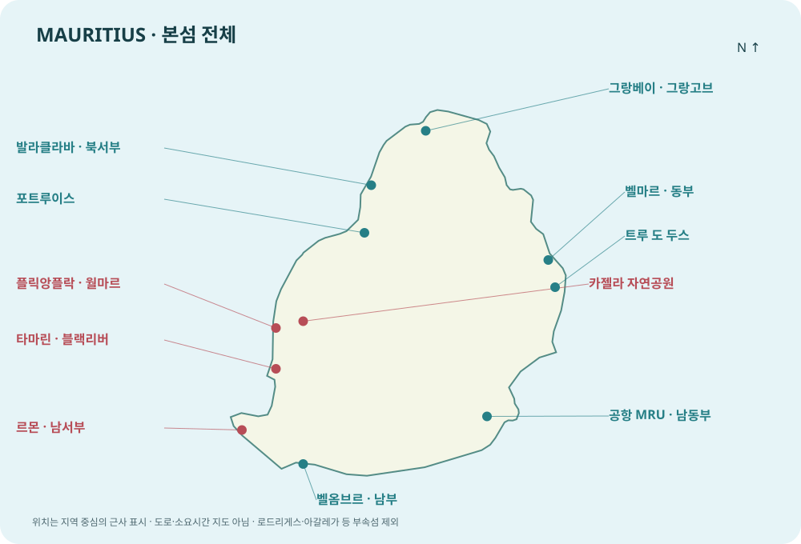

아넬리아
19.7만원 / 공개 1박 표시가
휴양과 외식을 조합할 실속 후보
2026.11.19 목록
객실·식사·취소·세금 조건 미지정
MAURITIUS · HONEYMOON
서부 한 숙소에 머무는 두 사람을 위한 숙소·식사·예산 비교
디나로빈 HB + 허니문 점심 특전과 슈가비치·라피로그의 실제 식사 포함 견적을 먼저 받아봐요. 식사에 신경 쓰고 한곳에서 쉬려는 두 사람을 위한 제안이에요. 숙소 평점이나 식당 개수만으로 음식 맛을 보장하지는 않아요.
취사·외식이 즐겁다면 플릭앙플락 아파트도 비교해요. 리조트와는 식사·청소·교통까지 더한 총액으로 봐야 해요.
서부·남서부가 현재 우선 지역이에요. 북부·동부·남부도 위치와 가격을 비교할 수 있게 함께 넣었어요.

실제 해안선 자료로 그린 지역 안내 지도예요. 호텔별 정확한 위치와 운전 경로는 지도 검색에서 확인해요. 모리셔스 도로 지도 · 해안선 자료: Natural Earth / geo-countries
공식 안내의 2026.11.1~2027.10.31 조건에는 HB 예약 시 매일 2코스 점심 제공이 있어요. HB의 조식·석식에 점심을 더하는 방식이지, 모든 식당·메뉴·음료가 무제한인 올인클루시브는 아니에요.
본식 다음 날 출국: 혼인신고 전이라면 청첩장·예식확인서 등 대체 증빙 인정 여부를 예약 전에 서면으로 받아요. 대체서류가 인정된다고 확인된 상태는 아니에요.
슈가비치 공개 허니문 안내의 객실 조식·업그레이드 디너는 각 1회 혜택이에요. 허니문이면 매일 세 끼 제공된다고 일반화할 수 없어요. 마라디바는 HB 조식·석식, 음료 제외이며 전문 식당은 크레딧 방식으로 안내해요.
슈가비치 허니문 안내 (25/26 · 2027 적용 재확인) · 마라디바 식사 조건
라피로그의 2026년 항공 지연·취소로 인한 연장 숙박 FB 업그레이드는 해당 상황의 추가 숙박에만 적용되는 안내예요. 일반 허니문 혜택으로 계산하지 않았어요.
조건 확인대표 비교 후보이며 방문객 수 순위가 아니에요. 아래 금액은 최근 공개 표시가로 객실·식사·날짜 조건이 서로 달라요. 2인 1실 최종 견적은 별도로 받아야 해요.
19.7만원 / 공개 1박 표시가
휴양과 외식을 조합할 실속 후보
2026.11.19 목록
객실·식사·취소·세금 조건 미지정
32.5만원 / 공개 1박 표시가
북서부 비교용 · 서부 연박안과 이동 비교
2026.11.19 목록
객실·식사·취소·세금 조건 미지정
43.5만원 / 공개 1박 표시가
북서부 비교용
2026.11.19 목록
객실·식사·취소·세금 조건 미지정
50.3만원 / 공개 1박 표시가
세 끼 포함 총액의 비교 기준
2026.11.19 목록
올인클루시브 리조트 · 해당 요금 포함 범위 재확인
56.3만원 / 공개 1박 표시가
동부 비교용 · 현재 서부 선호와는 별개
2026.11.19 목록
객실·식사·취소·세금 조건 미지정
71.2만원 / 공개 1박 표시가
식당 선택 폭을 비교할 서부 우선 후보
2026.11.19 목록
객실·식사·취소·세금 조건 미지정
75.7만원 / 공개 1박 표시가
동부 비교용
2026.11.19 목록
객실·식사·취소·세금 조건 미지정
78.3만원 / 공개 1박 표시가
허니문 HB+점심 특전을 함께 견적 받을 우선 후보
2026.11.19 목록
객실·식사·취소·세금 조건 미지정
38.8만원 / 공개 1박 표시가
슈가비치와 같은 조건으로 재견적
2026년 공개 검색 목록 · 11/20 확인
시작가 · 투숙일·식사·세금 조건 미지정
90.1만원 / 공개 1박 표시가
HB 포함 식당·전문식당 크레딧 확인
2026.11.7 갱신 · 11/14~15 · 2명 1실
럭셔리 룸 표시 · 식사·취소·세금 범위 확인
같은 출처의 2026.11.19 표시가도 투숙일·식사 조건이 맞춰진 견적이 아니에요. 허니문 할인·점심 특전 포함 여부는 이 숫자만으로 확인할 수 없어요.
파라디(남서부 르몬), 트루오비슈(북서부), 럭스 그랑베이(북부), 샹그릴라 르 투에스록(동부), 헤리티지 르 텔페어(남부)는 지역별 추가 비교 후보예요. 이번 자료에서는 동일 조건 가격을 확인하지 못해 임의 금액을 붙이지 않았어요.
Booking.com 플릭앙플락 휴가용 숙소 공개 평균: US$100/박. 특정 숙소·2027년 5월 요금이나 에어비앤비 평균은 아니며, 공개 페이지의 날짜 미지정 평균이에요. 2026.11.20 확인 기준이고 2인 전용 견적도 아니에요.
Airbnb 직접 확인 후보: La Peregrina Apartment, Beachfront Penthouse CapOuest, Luxury Apartment with Pool – Walk to Beach. 플랫폼에 실제 등재된 후보이며 날짜별 가격은 미확인이에요. 공용 수영장과 전용 풀, 침실 수, 해변 접근성을 구분해요.
| 자료·시점 | 공개 가격 | 조건과 비교 한계 |
|---|---|---|
| 2025.6.16 투어민 판매 발표 | 1인 US$1,200 2인 US$2,400 | 인터컨티넨탈 2박+리우 팰리스 3박 · 항공 제외 · 공항 이동·유심·보험 등 포함. 두 숙소 이동형·기한 지난 프로모션이라 현재 한곳 연박과 직접 비교 불가. |
| 2026년 라피로그 판매 사례 | 1인 R40,200 2인 R80,400 | 2026.11.1~27 Garden Bungalow 5박 HB · 요하네스버그 출발 세금 포함 패키지. 한국 출발 항공료로 계산하면 안 돼요. |
| 2026년 마라디바 판매 사례 | 1인 R63,210부터 2인 R126,420부터 | 2026.9.23~10.4 출발 기간 · 설명상 7박 HB 풀빌라·요하네스버그 왕복·차량 포함. 페이지에 Nights 10과 7박 설명이 혼재해 견적 재확인 필요. |
R은 남아공 랜드(ZAR), Rs/MUR은 모리셔스 루피예요. 서로 다른 통화를 혼동하지 않아요. 기한 지난 사례를 현재 예약가로 쓰지 않았어요.
초깃값은 실제 견적이 아닌 비교용 가정이에요. 5/30 한국 입국을 기준으로 현지 숙박 수를 확정한 뒤 바꿔봐요.
EUR 1=1,600원은 실시간 환율이 아닌 계산용 가정이에요. 숙소 견적에 관광세가 들어 있으면 중복 가산하지 않아요.
관광세는 2025.10.1부터 12세 이상 1인 1박 €3으로 안내돼요. MRA 공식 안내
2027년 5월 23일 한국 출국, 5월 30일 한국 입국하는 신혼부부 2명입니다. 현지 도착·출발일을 먼저 확인한 뒤 서부 또는 남서부 한 호텔 연박 견적을 부탁드립니다. 동일 객실의 BB/HB/FB 최종금액, 허니문 매일 점심 특전, 적용 식당·제외 메뉴·음료·예약 조건, 혼인 증빙 대체서류 인정 여부를 구분해주세요. 세금·공항 왕복·취소 조건 포함 여부도 부탁드립니다.
2025.2.13 여행산책 글을 읽었어요. 지역·기후·항공·숙소·체험의 입문 안내이며, 본문에는 객실별 숫자 견적이나 2027년 허니문 세 끼 적용 조건이 없어요. 블로그의 포괄적인 항공·기후 표현을 확정 일정으로 복사하지 않고, 식사 특전은 호텔 공식 조건과 대조했어요.